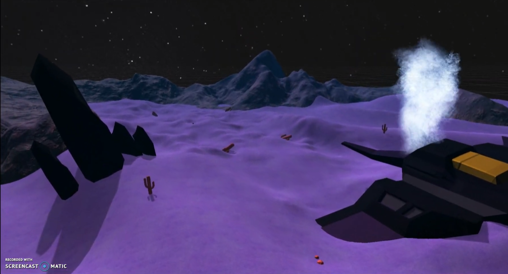

Follow that Pipe
Gameplay Designer
Project Length: 12 Weeks | Team Size: 12 | Engine Used: Unity

Responsibilities: I was a designer that focused on creating puzzles for kids to solve.
The puzzles would have pipes that would allow the kids to place them down before time runs out.
I was responsible for playtesting these puzzles in-engine and making sure they would be simple enough for kids to solve.
Challenges: The biggest challenge for me was making sure these puzzles were easy enough for children to solve.
It couldn’t be too easy and it couldn’t be too difficult. I had to make it difficult enough to be challenging, engaging, and fun.
Since we didn’t have any playtesters that would be the target audience, I and other designers playtested our puzzles.
We ran into the problem of having complex puzzles quite often. To solve that issue,
I pitched the idea of making the puzzles more difficult the longer the game went.
With each level completed, the puzzles would become more difficult little by little.
This would solve our issue of making the puzzles too simple and too difficult.
Abiogenesis
Level Designer
Project Length: 13 Weeks | Team Size: 4 | Engine Used: Unity

Responsibilities: I was the team’s level designer. I created greybox levels and altered the environment with colors and prop placing.
Challenges: This biggest challenge was creating an empty alien world with no prior level design experience.
The challenge was creating something unusual but finding a way to tell a story with the level.
The idea of our game was that the player would see the planet in different time settings.
The first set would be the present, where everything is dead and dry. The player would only see rocks for miles,
while the other time would be lively. Plants and brightness to show the player that there’s a difference between the two places.
Creating levels that were the opposite of each other. To solve this issue, I looked at a lot of reference art but I did a lot of prototyping.
I created a lot of levels and tested the colors of the environment in their entirety.
The X'Tal
Mechanics Designer
Project Length: 12 Weeks | Team Size: 11

Responsibilities: I was the mechanics designer. I designed and balanced all the mechanics for this project.
And when needed, I created new units and gave them designs and mechanics as well.
My job ranged from designing and balancing weapon costs to balancing and playtesting stratagems.
Challenges: The most difficult challenge for me was making sure I kept up with the lore team.
I didn’t want to design or balance something that didn’t stick with lore.
For example, when my team first started designing mechanics for units we had a conflict.
We were designing units one way but lore was being created and described units a different way.
This would be an issue because Warhammer is very clear when it comes to lore and gameplay being a close resemblance to one another.
To make sure we didn’t have these problems for future units, I presented the idea of having a member of the mechanics’ team be a part of the lore
team meetings. That person was usually me or the team lead or the both of us. This resulted in communication between teams becoming stronger.
FRIENDLY GEOMETRY
GAMEPLAY DESIGNER AND PROGRAMMER
July 2021 Game Jam

Responsibilities: Designed how our game would fit the “Joined Together” theme. Then greyboxed levels and obstacles for players to complete.
This led to me implementing level designs, obstacles, and the main menu.
Challenges: We had to create a game that aligned with the “Joined Together” them in 72 hours.
We had multiple ideas of what to do but scraped them quite often. I gave the idea of there being 2 controls, 1 for each player.
A platform game that requires 1 player to use the keyboard to maneuver throughout the course with the help of the other player to place platforms
for both players to succeed.
Imaginary Shift
Programmer
Project Length: 16 Weeks | Team Size: 9 | Engine Used: Unity

Responsibilities: Implemented UI/UX, in-game features related to item pick up, speed boost, and speedometer.
Challenges: The biggest challenge was being a programmer. I had no programming experience before this project,
so I had to learn on the fly. I had to think and figure out what was needed and how to do it.
If I couldn’t figure out how to create a script for something, then I needed to find a way to reapproach the problem.
To solve these problems I had to do things 1 step at a time. Figure out what I want to do and how am I going to do it.
I would break the problem down into a simple form. Then I would figure out the best way to solve this problem.
For example, the speed boost. I didn’t know how to make the speed boost work or even where to start.
I did a lot of research into creating scripts that would cause an object to change speed.
This gave me the idea of creating an invisible cube that gives the player a speed boost for a certain about of time when the player
collides with it. Just have to take it one step at a time.